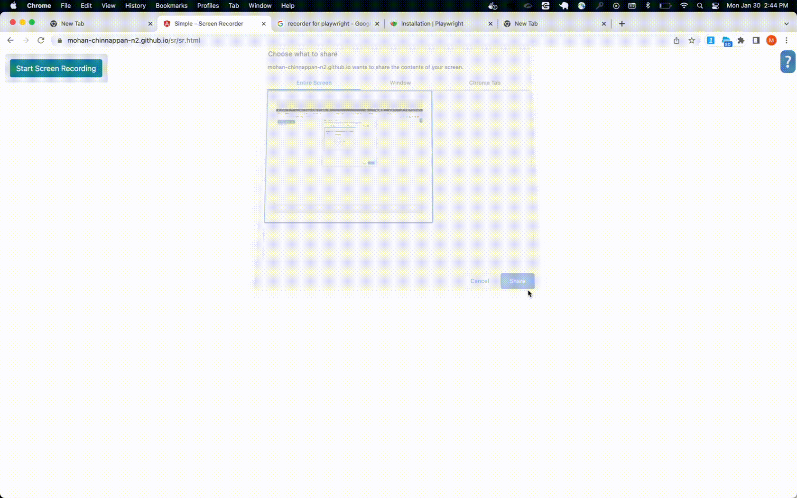

Testing with Playwright
Performance testing with Artillery and Playwright

import { test, expect } from '@playwright/test';
test('test', async ({ page }) => {
await page.goto('https://www.google.com/');
await page.getByRole('button', { name: 'Google Search' }).click();
await page.getByRole('link', { name: 'Introducing Lightning Web Components - Salesforce Developers https://developer.salesforce.com › documentation › lwc' }).click();
await page.getByRole('link', { name: 'Work with Salesforce Data' }).click();
await page.getByRole('treeitem', { name: 'Use Components Outside Salesforce' }).locator('div').click();
await page.getByRole('link', { name: 'Test Lightning Web Components' }).click();
});

-
Playwright is a modern end-to-end browser testing framework. Artillery integrates with Playwright to let you run load tests with real headless browsers.
-
Uses playwright codegen to generate test scripts fast
artillery version
___ __ _ ____
_____/ | _____/ /_(_) / /__ _______ __ ___
/____/ /| | / ___/ __/ / / / _ \/ ___/ / / /____/
/____/ ___ |/ / / /_/ / / / __/ / / /_/ /____/
/_/ |_/_/ \__/_/_/_/\___/_/ \__ /
/____/
VERSION INFO:
Artillery: 2.0.0-29
Node.js: v16.17.1
OS: darwin
- Artillery is centered around the concept of virtual users. (VUs)
Config file (Test Definition)
- A test definition is written as a YAML file
- The artillery CLI is then used to run that test definition.
config:
target: https://www.artillery.io
# Enable the Playwright engine:
engines:
playwright: {}
processor: "./flows.js"
scenarios:
- engine: playwright
flowFunction: "helloFlow"
flow: []
cat flow.js
module.exports = { helloFlow };
async function helloFlow(page) {
//
// The code below is just a standard Playwright script:
//
// Go to https://artillery.io/
await page.goto('https://artillery.io/');
// Click text=Pricing
await page.click('text=Pricing');
// assert.equal(page.url(), 'https://artillery.io/pro/');
// Click text=Sign up
await page.click('text=Sign up');
}
-
Run your tests from your own AWS account with no infra to set up or manage
-
Load test with Playwright— use Playwright to load test with real browsers
-
Test any stack — test HTTP, WebSocket, Socket.io, gRPC, Kafka, HLS, and more
-
Virtual users (VUs) and scenarios
-
Workload modeling
- A load phase tells Artillery how many virtual users to create over a period of time.
- Each virtual user will pick and run one of the scenarios in the test definition and run it to completion.
- A test run ends when all virtual users finish running their scenarios.
Load tests vs smoke tests
- Artillery can be used for both load testing and smoke testing (also known as synthetic checks, or synthetic tests). The only difference between a load test and a smoke test is the number of VUs created:
- A load test creates many VUs
- A smoke test creates just one VU
Runtime Platforms
By default Artillery will run the test from the local machine. Since v2.0.0-21 Artillery can also run tests on arbitrary platforms. Currently, AWS Lambda support is available in preview mode.
Examples
- Run a quick test which generates 20 virtual users, each sending 100 GET requests to the specified target:
artillery quick \
--count 20 \
--num 100 \
https://service-foo.preprod.acmecorp.digital/items
Run a distributed test on AWS Lambda in us-east-1 region using 25 workers:
artillery run \
--platform aws:lambda \
--platform-opt region=us-east-1 \
--count 25 \
hello-artillery.yml